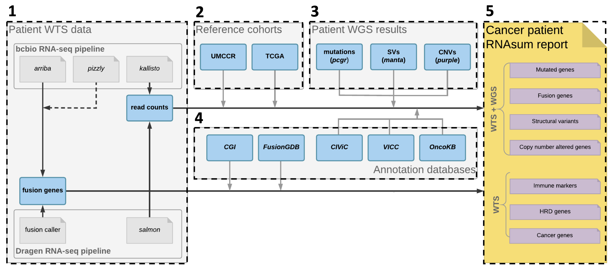

RNAsum is an R package that can post-process, summarise and visualise outputs primarily from DRAGEN RNA pipelines. Its main application is to complement genome-based findings from the umccrise pipeline and to provide additional evidence for detected alterations.
DOCS: https://umccr.github.io/RNAsum
Installation
- R package can be installed directly from the GitHub source:
remotes::install_github("umccr/RNAsum") # latest master commit
remotes::install_github("umccr/RNAsum@v0.0.X") # version 0.0.X
remotes::install_github("umccr/RNAsum@abcde") # commit abcde
remotes::install_github("umccr/RNAsum#123") # PR 123- Conda package is available from the Anaconda umccr channel:
conda install r-rnasum==0.0.X -c umccr -c conda-forge -c bioconda- Docker image is available from the GitHub Container Registy:
docker pull ghcr.io/umccr/rnasum:latestWorkflow
The pipeline consists of five main components illustrated and briefly described below. For more details, see workflow.md.

- Collect patient WTS data from the DRAGEN RNA pipeline including per-gene read counts and gene fusions.
- Add expression data from reference cohorts to get an idea about the expression levels of genes of interest in other cancer patient cohorts. The read counts are normalised, transformed and converted into a scale that allows to present the patient’s expression measurements in the context of the reference cohorts.
- Supply genome-based findings from whole-genome sequencing (WGS) data to focus on genes of interest and to provide additional evidence for dysregulation of mutated genes, or genes located within detected structural variants (SVs) or copy-number (CN) altered regions.
RNAsumis designed to be compatible with WGS patient outputs generated fromumccrise. - Collate results with knowledge derived from in-house resources and public databases to provide additional sources of evidence for clinical significance of altered genes e.g. to flag variants with clinical significance or potential druggable targets.
- The final product is an interactive HTML report with searchable tables and plots presenting expression levels of the genes of interest. The report consists of several sections described here.
Reference data
The reference expression data are available for 33 cancer types and were derived from external (TCGA) and internal (UMCCR) resources.
External reference cohorts
In order to explore expression changes in the patient, we have built a high-quality pancreatic cancer reference cohort.
Depending on the tissue from which the patient’s sample was taken, one of 33 cancer datasets from TCGA can be used as a reference cohort for comparing expression changes in genes of interest of the patient. Additionally, 10 samples from each of the 33 TCGA datasets were combined to create the Pan-Cancer dataset, and for some cohorts extended sets are also available. All available datasets are listed in the TCGA projects summary table. These datasets have been processed using methods described in the TCGA-data-harmonization repository. The dataset of interest can be specified by using one of the TCGA project IDs for the RNAsum --dataset argument (see Examples).
Internal reference cohort
The publicly available TCGA datasets are expected to demonstrate prominent batch effects when compared to the in-house WTS data due to differences in applied experimental procedures and analytical pipelines. Moreover, TCGA data may include samples from tissue material of lower quality and cellularity compared to samples processed using local protocols. To address these issues, we have built a high-quality internal reference cohort processed using the same pipelines as input data (see data pre-processing).
This internal reference set of 40 pancreatic cancer samples is based on WTS data generated at UMCCR and processed with the bcbio-nextgen RNA-seq pipeline to minimise potential batch effects between investigated samples and the reference cohort and to make sure the data are comparable. The internal reference cohort assembly is summarised in the Pancreatic-data-harmonization repository.
Note
There are two rationales for using the internal reference cohort:
- In case of pancreatic cancer samples this cohort is used:
- in batch effects correction
- as a reference point for comparing per-gene expression levels observed in the data of the patient of interest and data from other pancreatic cancer patients.
- In case of samples from any cancer type the data from the internal reference cohort is used in the batch effects correction procedure performed to minimise technical-related variation in the data.
Input data
RNAsum accepts WTS data processed by the DRAGEN RNA pipeline. Additionally, the WTS data can be integrated with WGS-based data processed using the umccrise pipeline. In the latter case, the genome-based findings from the corresponding patient sample are incorporated into the report and are used as a primary source for expression profile prioritisation.
WTS
The only required WTS input data are read counts provided in a quantification file from the DRAGEN RNA pipeline.
DRAGEN RNA
The table below lists all input data accepted in RNAsum:
| Input file | Tool | Example | Required |
|---|---|---|---|
| Quantified transcript abundances | salmon (description) | TEST.quant.sf | Yes |
| Fusion gene list | DRAGEN RNA | TEST.fusion_candidates.final | No |
These files are expected to be organised in the following structure:
|
|____<SampleName>
|____<SampleName>quant.sf
|____<SampleName>.fusion_candidates.finalWGS
RNAsum is designed to be compatible with WGS outputs generated from umccrise.
The table below lists all input data accepted in RNAsum:
| Input file | Tool | Example | Required |
|---|---|---|---|
| SNVs/Indels | PCGR | pcgr.snvs_indels.tiers.tsv | No |
| CNVs | PURPLE | purple.cnv.gene.tsv | No |
| SVs | Manta | sv-prioritize-manta.tsv | No |
These files are expected to be organised in the following structure:
|
|____umccrised
|____<SampleName>
|____pcgr
| |____<SampleName>-somatic.pcgr.snvs_indels.tiers.tsv
|____purple
| |____<SampleName>.purple.gene.cnv
|____structural
|____<SampleName>-manta.tsvUsage
rnasum_cli=$(Rscript -e 'x = system.file("cli", package = "RNAsum"); cat(x, "\n")' | xargs)
export PATH="${rnasum_cli}:${PATH}"$ rnasum.R --version
rnasum.R x.x.x
$ rnasum.R --help
Usage
=====
/Library/Frameworks/R.framework/Versions/4.3-arm64/Resources/library/RNAsum/cli/rnasum.R [options]
Options
=======
--arriba_pdf=ARRIBA_PDF
File path of Arriba PDF output
--arriba_tsv=ARRIBA_TSV
File path of Arriba TSV output
--batch_rm=BATCH_RM
Remove batch-associated effects between datasets? [def: TRUE]
--cn_gain=CN_GAIN
CN threshold value to classify genes within gained regions [def: 95]
--cn_loss=CN_LOSS
CN threshold value to classify genes within lost regions [def: 5]
--dataset=DATASET
Dataset to be used as external reference cohort [def: PANCAN]
--dataset_name_incl=DATASET_NAME_INCL
Include dataset in report name? [def: FALSE]
--dragen_fusions=DRAGEN_FUSIONS
File path to DRAGEN RNA-seq 'fusion_candidates.final' output
--drugs=DRUGS
Include drug matching section in report? [def: FALSE]
--filter=FILTER
Filter out low expressed genes? [def: TRUE]
--hide_code_btn=HIDE_CODE_BTN
Hide "Code" button above code chunks in report? [def: TRUE]
--immunogram=IMMUNOGRAM
Include immunogram in report? [def: FALSE]
--log=LOG
Log2 transform data before normalisation? [def: TRUE]
--manta_tsv=MANTA_TSV
File path to umccrise 'manta.tsv' output
--norm=NORM
Normalisation method
--pcgr_splice_vars=PCGR_SPLICE_VARS
Include non-coding splice region variants reported in PCGR? [def: TRUE]
--pcgr_tier=PCGR_TIER
Tier threshold for reporting variants reported in PCGR [def: 4]
--pcgr_tiers_tsv=PCGR_TIERS_TSV
File path to PCGR 'snvs_indels.tiers.tsv' output
--project=PROJECT
Project name
--purple_gene_tsv=PURPLE_GENE_TSV
File path to PURPLE 'purple.cnv.gene.tsv' output
--report_dir=REPORT_DIR
Directory path to output report
--salmon=SALMON
File path to salmon 'quant.sf' output
--sample_name=SAMPLE_NAME
Sample name to be presented in report
--sample_source=SAMPLE_SOURCE
Type of investigated sample [def: -]
--save_tables=SAVE_TABLES
Save interactive summary tables as HTML? [def: TRUE]
--scaling=SCALING
Scaling for z-score transformation (gene-wise or group-wise) [def: gene-wise]
--subject_id=SUBJECT_ID
Subject ID
--top_genes=TOP_GENES
Number of top ranked genes to be presented in report
--transform=TRANSFORM
Transformation method to be used when converting read counts [def: CPM]
--umccrise=UMCCRISE
Directory path of the corresponding WGS-related data
--help, -h
Show this help message and exitNote
Human reference genome GRCh38 (Ensembl based annotation version 86) is used for gene annotation by default. GRCh37 is no longer supported.
Examples
Below are RNAsum CLI commands for generating HTML reports under different data availability scenarios:
Note
- Example data is provided in the
/inst/rawdata/test_datafolder of the GitHub repo. - The
RNAsumruntime should be less than 20 minutes using 16GB RAM memory and 1 CPU.
1. WTS and WGS data
This is the most frequent and preferred case, in which the WGS-based findings will be used as a primary source for expression profile prioritisation. The genome-based results can be incorporated into the report by specifying the location of the corresponding umccrise output files (including results from PCGR, PURPLE, and Manta) using the --umccrise argument. The Mutated genes, Structural variants and CN altered genes report sections will contain information about expression levels of the mutated genes, genes located within detected SVs and CN altered regions, respectively. The results in the Fusion genes section will be ordered based on the evidence from genome-based data. A subset of the TCGA pancreatic adenocarcinoma dataset is used as reference cohort (--dataset TEST).
rnasum.R \
--sample_name test_sample_WTS \
--dataset TEST \
--dragen_rnaseq inst/rawdata/test_data/dragen \
--report_dir inst/rawdata/test_data/dragen/RNAsum \
--umccrise inst/rawdata/test_data/umccrised/test_sample_WGS \
--save_tables FALSEThe HTML report test_sample_WTS.RNAsum.html will be created in the inst/rawdata/test_data/dragen/RNAsum folder.
2. WTS data only
In this scenario, only WTS data will be used and only expression levels of key UMCCR Cancer genes, Fusion genes, Immune markers and homologous recombination deficiency genes (HRD genes) will be reported. Moreover, gene fusions reported in the Fusion genes report section will not contain information about evidence from genome-based data. A subset of the TCGA pancreatic adenocarcinoma dataset is used as the reference cohort (--dataset TEST).
rnasum.R \
--sample_name test_sample_WTS \
--dataset TEST \
--dragen_rnaseq inst/rawdata/test_data/dragen \
--report_dir inst/rawdata/test_data/dragen/RNAsum \
--save_tables FALSEThe output HTML report test_sample_WTS.RNAsum.html will be created in the inst/rawdata/test_data/dragen/RNAsum folder.
3. WTS WGS and clinical data
For samples derived from subjects, for which clinical information is available, a treatment regimen timeline can be added to the HTML report. This can be added by specifying the location of a relevant excel spreadsheet (see example test_clinical_data.xlsx under inst/rawdata/test_data/test_clinical_data.xlsx) using the --clinical_info argument. In this spreadsheet, at least one of the following columns is expected: NEOADJUVANT REGIMEN, ADJUVANT REGIMEN, FIRST LINE REGIMEN, SECOND LINE REGIMEN or THIRD LINE REGIMEN, along with START and STOP dates of corresponding treatments. A subset of the TCGA pancreatic adenocarcinoma dataset is used as the reference cohort (--dataset TEST).
rnasum.R \
--sample_name test_sample_WTS \
--dataset TEST \
--dragen_rnaseq $(pwd)/../rawdata/test_data/dragen \
--report_dir $(pwd)/../rawdata/test_data/dragen/RNAsum \
--umccrise $(pwd)/../rawdata/test_data/umccrised/test_sample_WGS \
--save_tables FALSE \
--clinical_info $(pwd)/../rawdata/test_data/test_clinical_data.xlsx \
--save_tables FALSEThe HTML report test_sample_WTS.RNAsum.html will be created in the ../rawdata/test_data/stratus/test_sample_WTS_dragen_v3.9.3/RNAsum folder.
Output
The pipeline generates a HTML Patient Transcriptome Summary report and a results folder:
|
|____<output>
|____<SampleName>.<output>.html
|____results
|____exprTables
|____glanceExprPlots
|____...Report
The generated HTML report includes searchable tables and interactive plots presenting expression levels of altered genes, as well as links to public resources describing the genes of interest. The report consists of several sections, including:
- Input data
- Clinical information*
- Findings summary
- Mutated genes**
- Fusion genes
- Structural variants**
- CN altered genes**
- Immune markers
- HRD genes
- Cancer genes
- Drug matching
* if clinical information is available; see --clinical_info argument
** if genome-based results are available; see --umccrise argument
Detailed description of the report structure, including result prioritisation and visualisation is available here.